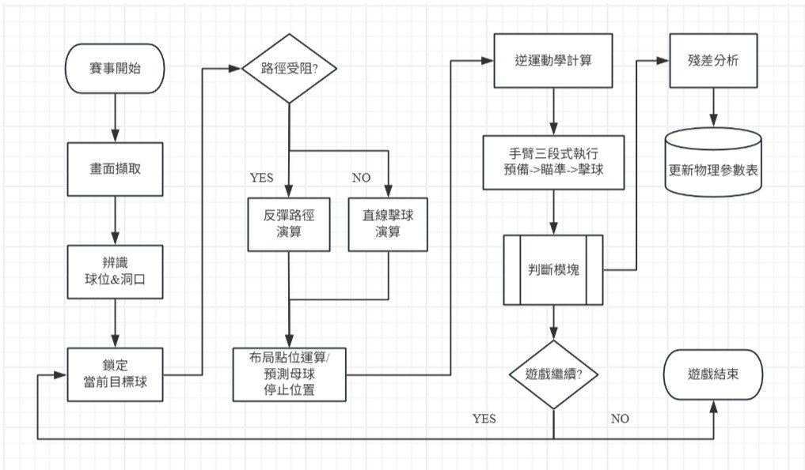

系統架構
Webcam
視覺輸入
→
視覺輸入
Vision
球偵測
→
球偵測
Strategy
策略規劃
→
策略規劃
末端載具
擊球機構
擊球機構
Windows 接收影像｜WSL 運算軌跡｜Arduino 控制位移與力道

軟體控制系統
Windows
視覺畫面
控制面板
策略參數調整
控制面板
策略參數調整
WSL / Linux
角度座標運算
力道軌跡計算
反彈路徑規劃
力道軌跡計算
反彈路徑規劃
Arduino
位移控制
力道訊號輸出
機構驅動
力道訊號輸出
機構驅動
三系統透過訊息傳遞機制整合，達成「分開開發、分開測試、統一應對」
末端載具 — 擊球機構
- 步進馬達 + 皮帶傳動
精準控制撞桿位移距離 - 3D 列印撞桿
客製化桿頭形狀，適應不同擊球角度 - 白球擊發機制
透過皮帶帶動撞桿衝撞白球，達成定桿或側旋擊球